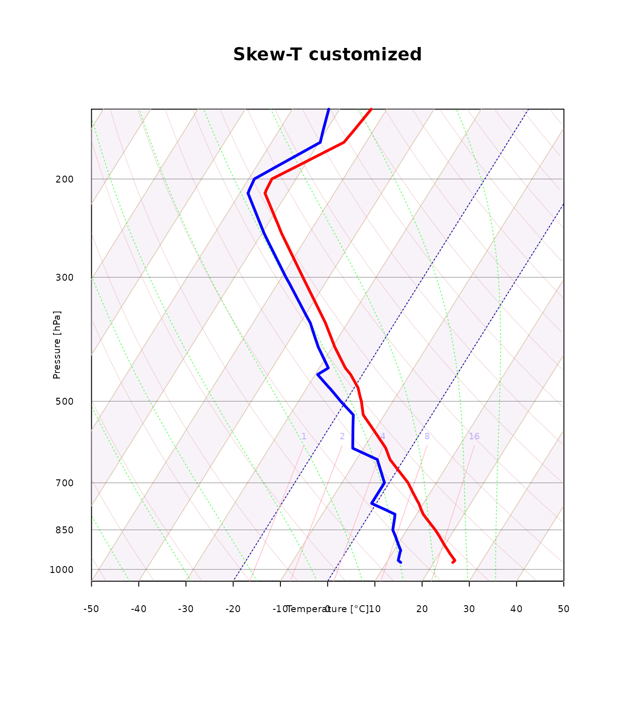
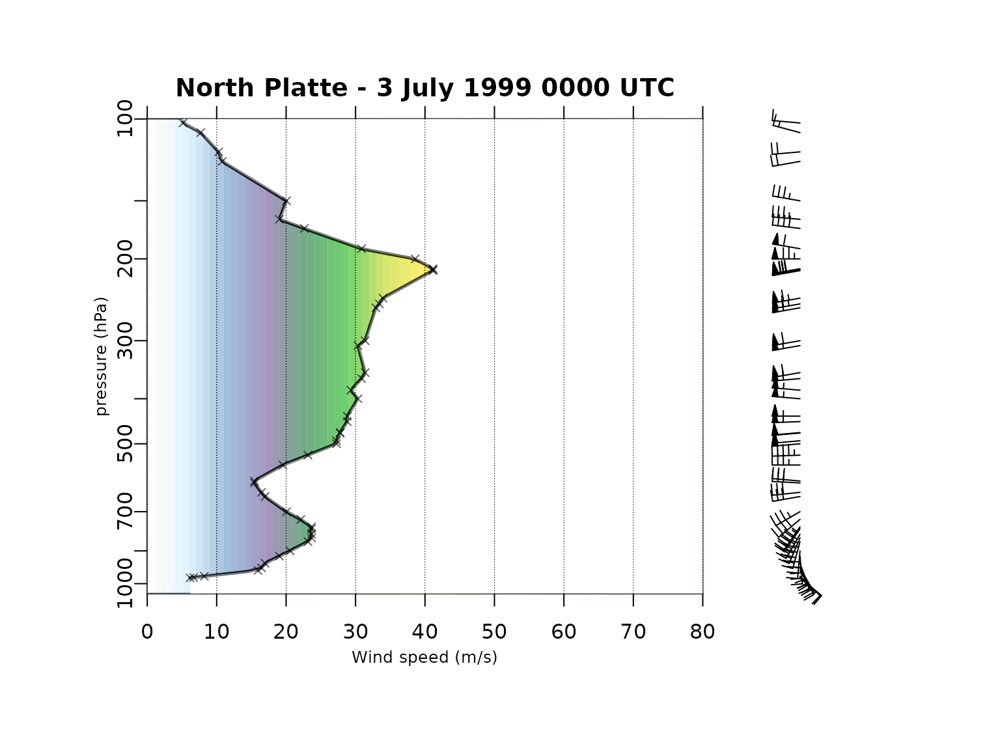
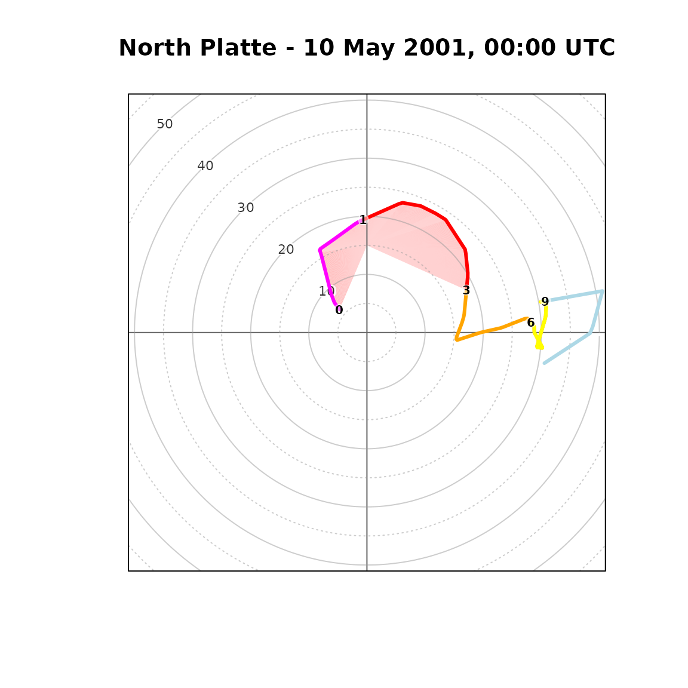

vignettes/miscellaneous.Rmd
miscellaneous.RmdDownload sounding and draw customized Skew-T plot (e.g. up to 150 hPa instead of default 100 hPa) with changed line width and color stripes for temperature:
library(thunder)
northplatte = get_sounding(wmo_id = 72562, yy = 1999, mm = 7, dd = 3, hh = 00)
skewt_plot(ptop = 150, close_par = FALSE, temp_stripes = TRUE, deg45 = TRUE, mixing_ratio_col = "pink")
skewt_lines(northplatte$temp, northplatte$pressure, ptop = 150, col = "red", lwd = 3)
skewt_lines(northplatte$dpt, northplatte$pressure, ptop = 150, col = "blue", lwd = 3)
title("Skew-T customized")
northplatte = get_sounding(wmo_id = 72562, yy = 1999, mm = 7, dd = 3, hh = 00)
par(fig = c(0.1, 0.75, 0.15, 0.9), new = TRUE, mar = c(1, 1, 1, 1), oma = c(0, 0, 0, 0))
sounding_wind(pressure = northplatte$pressure, ws = northplatte$ws, yaxs = TRUE)
title("North Platte - 3 July 1999 0000 UTC", outer = FALSE)
par(fig = c(0.65, 0.95, 0.15, 0.9), new = TRUE, mar = c(1, 1, 1, 1), oma = c(0, 0, 0, 0))
sounding_barbs(northplatte$pressure, northplatte$ws, northplatte$wd, northplatte$altitude, interpolate = FALSE, barb_cex = 1)
It is possible to define its own storm_motion parameters
in order to visualise and/or compute parameters for cells moving with
pre-defined direction and speed. The below example shows customized
hodograph for thunderstorm cell moving with the speed of 15 m/s and 180
degree direction.
data("northplatte")
sounding_hodograph(ws = northplatte$ws,
wd = northplatte$wd,
altitude = northplatte$altitude,
max_speed = 38,
SRH_polygon = "03km_RM",
storm_motion = c(15, 180)
)
title("North Platte - 10 May 2001, 00:00 UTC")